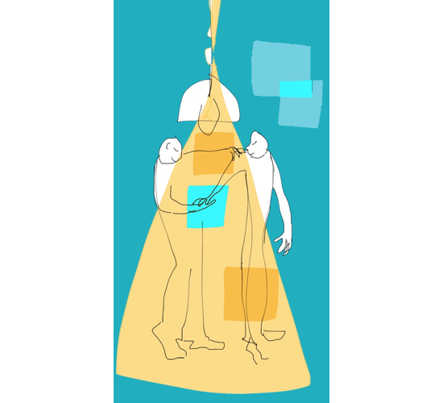

Départ soudain de votre RRH
Votre RRH part. L'équipe est déstabilisée. Nous assurons la continuité opérationnelle sans laisser la fonction RH en suspens.
→ RH à temps partagéOn fait d'abord le point sur vos enjeux et vos pratiques RH et/ou RSE, sans jargon. Puis, on reste à vos côtés pour co-construire et mettre en œuvre un plan d'actions, outiller vos RH et managers et engager vos équipes dans l'action. Des centaines d'entreprises accompagnées depuis 2003. En Région AURA et partout en France.
Une tuile, une offre — et le chemin pour aller plus loin.
Chaque niveau est conçu pour répondre à votre besoin et s'adapter à votre actualité, votre structure, vos enjeux. Pour vous, on prévoit même une RH ou RSE à temps partagé pour vous accompagner dans vos projets de transformation.
Une question sur une expertise ?Réponse sous 24 h, sans engagement.
Poser ma questionLe diagnostic pose le plan d'action. L'accompagnement le met en œuvre. Avec un partenaire RH qui s'inscrit dans le temps, pas un prestataire au coup par coup.

Un diagnostic ponctuel, c'est utile. Un partenaire qui connaît votre contexte & vos enjeux, vos équipes et votre culture, démultiplie l'impact.
Les sujets RH traités dans l'urgence coûtent cher. Le stop & go aussi. Un rythme régulier limite les accrocs et les crises.
Pas besoin de réexpliquer 1 fois, 2 fois, 3 fois : votre consultant connaît vos équipes et votre culture depuis le diagnostic.
Un rythme qui structure les RH et ancre les évolutions dans le temps.
Votre RRH part. L'équipe est déstabilisée. Nous assurons la continuité opérationnelle sans laisser la fonction RH en suspens.
→ RH à temps partagéVous passez de 30 à 80 salariés. Les processus artisanaux ne tiennent plus. Il faut structurer sans freiner.
→ Impulsion ou RH à temps partagéVos clients exigent un bilan carbone, une labellisation, un plan RSE. Vous ne savez pas par où commencer.
→ Impulsion + volet RSEVos managers font de leur mieux mais manquent d'outils et de recul. Le turnover grimpe.
→ Respiration ou ImpulsionNous vous orientons vers les dispositifs les plus adaptés de votre OPCO ou de la Région Auvergne-Rhône-Alpes. Nous vous accompagnons dans le montage du dossier. Le reste à charge éventuel est connu d'avance.
Le plus souvent, oui. Le diagnostic opérationnel permet une compréhension partagée de vos pratiques RH & RSE et débouche sur un plan d'actions priorisé. L'accompagnement prend ensuite le relais pour mettre en œuvre ce plan dans la durée, avec vos équipes. Les deux sont complémentaires.
Respiration vous aide à faire face à vos problématiques immédiates en vous donnant accès à notre ligne directe RH, dans la limite d'un forfait d'heures. Vous n'êtes plus seul·e. Impulsion est un cran au-dessus : un accompagnement régulier pour structurer, engager, redynamiser. Respiration pour prendre du recul et sécuriser, Impulsion pour transformer.
Un RH à temps partagé est opérationnel immédiatement, avec une expertise transversale. Externalisé ou internalisé, dans vos murs ou à distance, l'objectif est de structurer la fonction RH et de transférer les compétences à vos équipes. Une mission ciblée avec un objectif d'autonomie.
Nos interventions sont co-finançables via votre OPCO. Nous vous aidons à optimiser les dispositifs et à monter les dossiers.
Oui. Beaucoup de nos clients commencent par un diagnostic puis Respiration, et passent à Impulsion quand les enjeux se précisent. L'inverse arrive aussi : après une mission RH à temps partagé, certains basculent sur Respiration pour garder un lien dans la durée.
Basés près de Lyon (entre Lyon, Grenoble et Chambéry), nous nous déplaçons partout en France et en Europe pour le diagnostic, l'accompagnement et les formations. Nos interventions se font sur site, jamais depuis un bureau.
Des contenus actionnables pour préparer votre diagnostic et structurer vos pratiques RH.
Passez en revue vos missions RH et votre niveau d'aisance pour cibler vos points de progrès.
Découvrir le questionnaire →25 pages d'essentiel : obligations légales, bonnes pratiques, outils concrets.
Télécharger le guide →« Ces réflexions nous ont conduits à faire évoluer notre organisation afin de renforcer notre efficacité et de mieux structurer notre démarche RH pour les années à venir. »
Un premier échange de 30 minutes, gratuit et sans engagement. On écoute, on oriente, on ne vend rien.
Nous contacter